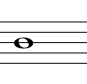
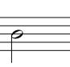
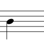
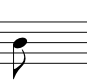
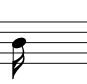
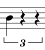
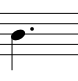

Computers can represent rhythm in two ways: absolute time, and tempo-relative time. Tempo-relative time is what you're used to: a tempo is given in beats per minute, and then the rhythm is given in a series of quarter notes, eighth notes, dotted notes, triplets, and so on. Many languages use a shorthand to describe rhythmic values; this shorthand is given in the table below.
Another way computers represent rhythm is with absolute time. Absolute time measures the number of seconds—usually milliseconds—between note onsets.
Let's try to convert a rhythm from tempo-relative time to absolute time. At quarter = 60, each quarter note is exactly one second long—or 1000 milliseconds—because there are sixty seconds in one minute. Therefore, each eighth note is exactly half-a-second long, or 500 milliseconds, and each half note is exactly two seconds long, or 2000 milliseconds. A dotted quarter note would be 1500 milliseconds, because a dotted quarter note is a quarter note plus an eighth note, and a triplet quarter note would be 666.6 repeating milliseconds long, because there are three triplet quarters for every two regular quarters.
The formula from converting from tempo-relative time in BPM to absolute time in milliseconds is 60,000 / BPM. As we saw earlier, with quarter = 60, the milliseconds in each quarter note is 60,000 / 60, or 1000. If quarter = 100, the milliseconds in each quarter note is 60,000 / 100, or 600 milliseconds. If eighth = 300, the milliseconds in each eighth note is 60,000 / 300, or 200 milliseconds.
To convert back from absolute time to BPM, you can use the inverse of the formula: 60,000 / milliseconds. Therefore, if a quarter note is 750 milliseconds long, the BPM is 60,000 / 750, or 80 beats per minute.
| Note Value | Abbreviation | Notation |
|---|---|---|
| Whole Note | 1n |  |
| Half Note | 2n |  |
| Quarter Note | 4n |  |
| Eighth Note | 8n |  |
| Sixteenth Note | 16n |  |
| Quarter Note Triplet | 4nt |  |
| Dotted Quarter Note | 4nd |  |